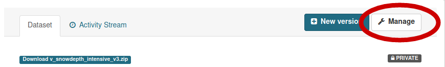

Data upload¶
Check for protocol¶
Warning: Before uploading a dataset you have to be sure that the related protocol is already in the portal. If it’s not yet available, follow the instruction for protocol upload
Upload a dataset¶
Login with a user with editor role for the module the dataset belongs to
Go to Datasets and select “Add Dataset” (if not visible, you are not authorized: contact the module leader)
{kind=link}
The title should be identical to the dataset name
The title should follow formatting rules (starting with V_for datasets from Varanger and S_for datasets from Svalbard)
Add a short description of the dataset. Here an example in Markdown format:
Select an embargo policy. If the dataset doesn’t require an embargo, go on with next point. If your dataset include data less than 2 years old, you could select an embargo end date. Read the detailed instructions on how to manage embargo data and dataset versions here
After filling all metadata, select Next: “Add data”
Upload all the data file in the following order, add a filename (best to keep the file’s name by click on “Fill field with filename or URL”) and choose the correct file format
Data files upload order¶
Upload the readme file as a PDF/A. A description can be added, for example: “Additional information about the dataset, including a description of the variables included in the dataset”
Upload the auxiliary file/s A description can be added, for example: “Auxiliary information about the sampling sites including information about whem the site has been included in the sampling design”
Upload the coordinates file. A description can be added, for example: “Coordinates of all sites included in the dataset”
Upload all data files in chronological order (from older to newer)
Publishing the dataset¶
After the upload is completed, the dataset can be set to ‘Public’ by selecting ‘Manage’ in the menu of the dataset and setting the ‘Visibility’ metadata element to ‘Public’.

Dataset Versions¶
Datasets already published cannot be removed or modified, because of the FAIR requirement of being permanent and findable for citation and reuse purposes. whenever a dataset content changes, it is necessary to create a new version of it.
Embargo management¶
Datasets in embargo follow a particular setup, which guarantees availability of older data contents and protection of more recent ones.
By default COAT data follow an Open Data policy. There is however the possibility to set an embargo for data files up to 2 years old.
Warning: the embargo management is a bit complex, please read carefully the details below:
When a dataset contains data files which should be kept in embargo (not published), there is a specific workflow to follow, which implies the use of dataset versions. Such a workflow avoids keeping private the entire dataset with all its content, but keeps private only the versions which include the data files to be embargoed.
In case of a dataset which includes some recent data files to be embargoed, the workflow implies creating more than one version of the same dataset, with one version immediately public, and one or 2 versions in embargo, kept private.
A user selects the embargo end date for the versions with embargo data files. The dataset version in embargo will stay private until the embargo end date, then will automatically switch to a “public” state.
Let’s see an example…
Ola Nordmann is a data portal’s editor. On January 1st 2021 he decides to upload a new dataset containing one data file per year (from 2000 to 2020). Since he is working on a PhD thesis, he opts for keeping the latest 2 years of data in embargo (the only eligible for such exception). No one will blame Ola Normann for this choice, even if everyone knows that keeping all the data public is the best.
Here his workflow:
Ola creates the first dataset version, which contains only data which can be public (from year 2000 to year 2018), and calls it “sample_dataset”
This dataset will be automatically labelled as “sample_dataset_v1”
Ola publishes “sample_dataset_v1”
Ola creates a new version using the “New Version” button, which will create automatically “sample_dataset_v2”, in private mode
Ola adds 1 data file containing data for the year 2019, so that “sample_dataset_v2” contains data from 200 to 2019
Ola keeps the “sample_dataset_v2” private, and sets the embargo end date on January 1st 2022.
Ola creates a third version of the dataset, “sample_dataset_v3” including year 2020 (again, private), with embargo end date January 1st 2023
Ola uses python or R (ckanr) scripts to dwonload even the embargo files whenever needed
After 1 year, “sample_dataset_v2” is being automatically published, and becomes the default version of the dataset (the latest published version)
Ola now has one more year of data, 2021, and creates a new version, including 2000 - 2021 (embargoed, private) with embargo end date january 1st 2023
And so on…